01 / HEALTHCARE
HEALTHCARE · BRAND COMMUNICATION · AI-SUPPORTED WORKFLOWS
I turn complex ideas into things people can understand, trust and act on.
我是Sia，欢迎你从这里认识我。
比起罗列做过什么，我更想分享自己怎样把事情一点点想清楚：听懂医生、客户和消费者真正关心的问题，追问一个数字究竟在和谁比较，也想办法让专业结论离开文件，进入真实沟通。
下面是我一路留下的工作、研究与生活现场。
欧莱雅医学与品牌实践飞书ToB项目630份AIGC用户研究UCL健康人文
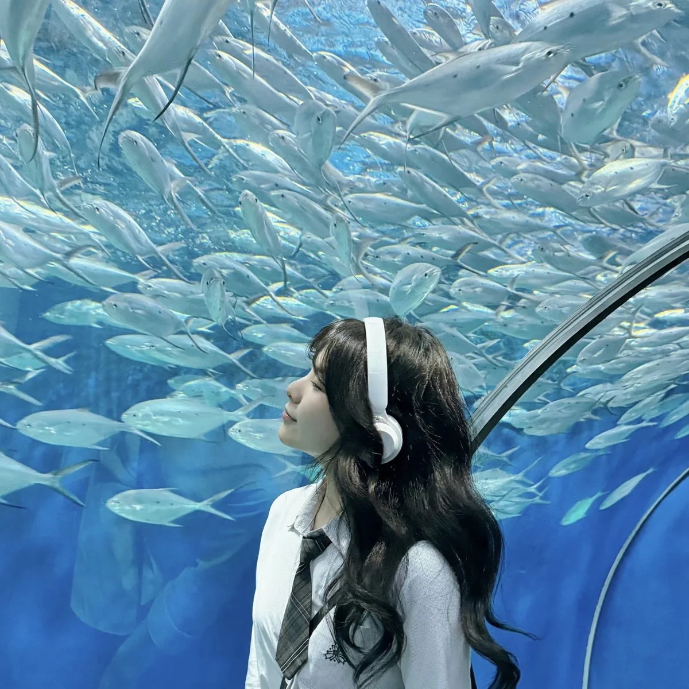
CHOOSE A LENS / 从你关心的能力开始
同一个Sia，
三种阅读入口。
三种入口，共享同一条主线：先弄清谁在提问、处于什么场景、现有证据到底能说明什么，再把复杂信息变成可以理解、信任并采取行动的内容与工具。
02 / BRAND
品牌与内容判断
不只把信息写完，也判断从什么场景切入、怎样让受众愿意看下去。03 / AI & TO B
AI与ToB项目
从研究AI采用，到把工具做出来，再到企业客户与开发者的真实现场。THE 60-SECOND READ / 快速认识我
不是一条直线，
但有一条主线。
我会先看清谁在提问、问题发生在什么场景，以及现有资料究竟能回答到哪一步，再决定内容该如何组织。三个真实现场，也留下了这条主线最具体的证据。
01 / L’ORÉAL
从医学教育到品牌传播，再回到适乐肤医学实践
我既处理过医生与诊所的一线问题，也做过合作人研究、医学传播和临床文献工具。02 / FEISHU
在企业管理者、销售和开发者之间跑现场
年度发布会、企业客户活动与全国开发者项目，让“谁在决策、谁在使用”变得很具体。03 / AI
从研究用户为什么采用AI，到自己搭一套AI工作流
630份有效样本让我理解使用意愿；真实工作则让我开始对AI答案的参照系与来源负责。CURRENT LENS
新闻训练让我在意“怎么讲清楚”，健康人文让我再问一句：是谁在定义问题？
本科新闻学（双语）专业排名第1，现在在UCL学习健康人文。研究、实习和生活现场看起来跨度很大，但它们都在训练我识别信息落差、理解不同受众，并为自己的表达负责。
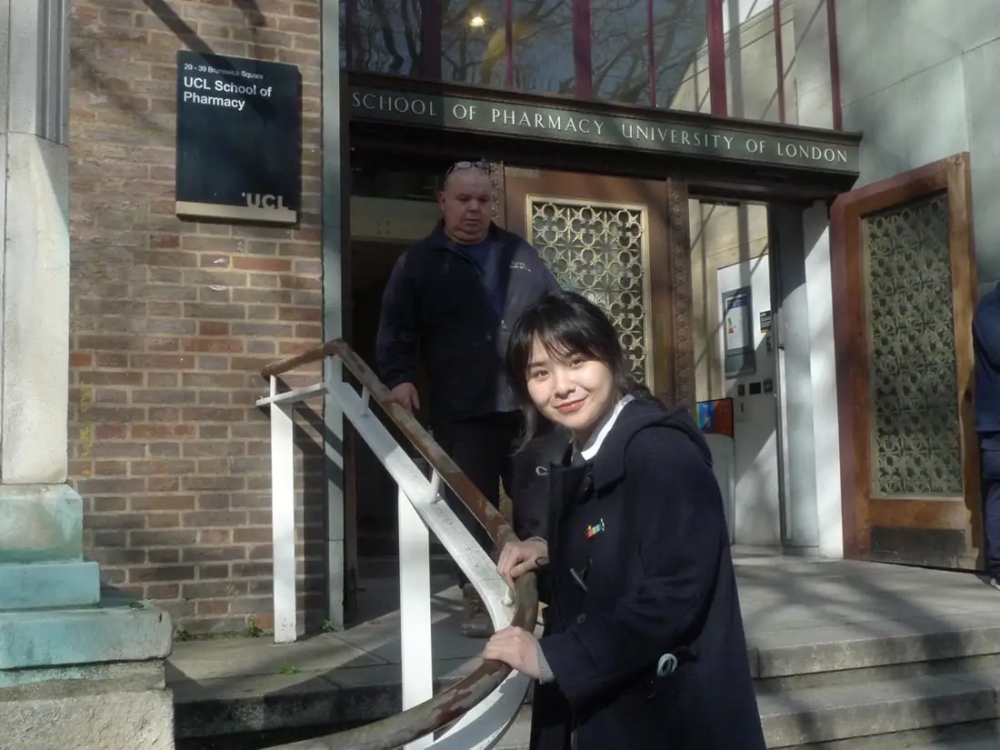
EXPERIENCE & SELECTED WORK / 经历与作品
一条时间线，
五种真实场景。
按时间倒序展开。每段经历只讲最能代表我判断和行动的部分。
01 / CURRENT · MEDICAL & AI WORKFLOW
欧莱雅适乐肤 CeraVe｜医学部实习生
CeraVe Medical
2026.07–至今
SELECTED CASE
从一个答不清的数字，
到一套可以追溯的证据工作流
起点并不是一个宏大的产品计划，而是一次让我语塞的追问。
AI给了我一个醒目的粗体数字。我的直属负责人兼导师 Ryan 问：它和谁比？基线还是对照组？哪个时间点？
那一刻我意识到：会让AI回答问题，不等于会对答案负责。
- 01被动取数
把文献交给AI，得到数字，再在下一次追问后回头补问参照系。
- 02发现缺口
只记住结论，会漏掉研究人群、比较对象、时间点，以及这个结果究竟能说明什么。
- 03主动原型
我发起并搭建第一版工具，让关键数字和原始来源可以一起被查看。
- 04拓展用户
Ryan进一步提出：它不只服务医学部，也可以帮助需要在一线进行医学与专业沟通的同事快速理解证据。
- 05持续迭代
加入快速理解、完整证据、对比、术语、指南与来源追溯，并按反馈继续修改。
- 06区分内外版本
内部版本进一步加入公司邮箱认证；对外页面只保留公开资料与核心交互。
CLINICAL EVIDENCE MINI LAB
临床证据，怎样被读懂，也被核对？
这是基于公开资料重新组织的个人作品集演示。你可以切换阅读深度、查看研究数据、比较同类资料，也可以试着检索和提问。
阅读模式
公开资料演示版4份公开发表资料不连接公司内部系统不构成医疗建议
0 / 2 项已加入
ALSO IN PROGRESS / 医学传播
从“把信息讲完整”，
到“让读者愿意看下去”。
读者是一线医生和医护人员。他们读得懂专业内容，但在朋友圈里刷到另一份像工作文件的长图，也可能没有力气点开。我的改变不是减少证据，而是先从熟悉的临床场景和患者问题进入，再把研究、结果与可直接带走的解释组织出来。
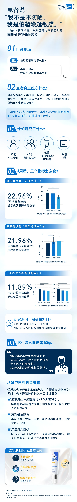
内容入口
此前：先呈现指南与专业信息
本次：先还原患者会怎么问
阅读路径
此前：完整信息连续展开
本次：场景 → 研究 → 结果 → 如何解释
读者带走什么
此前：一套系统知识
本次：指标怎么变，也包括医生可以怎样回应患者
我的职责：传播形式与内容框架、供应商Brief、稿件修改、视觉方向反馈及发布文案。
分工说明：长图的视觉执行由合作供应商完成。
02 / TO B · ENTERPRISE & DEVELOPERS
字节跳动飞书｜商业化市场实习生
市场与品牌营销
2024.09–2025.02
现场让我真正看见：决策者、使用者和推动项目的人，并不是同一群人。
- 参与覆盖2,000+名企业客户及管理者的年度发布会，接触零售、餐饮等行业CEO与CIO。
- 协同支持全国15城开发者项目，推进城市信息、场地物料和参与者沟通。
- 在Maker Day接触企业IT人员、程序员和AI开发者，理解他们如何把个性化模板当作自己的“孩子”带来交流。
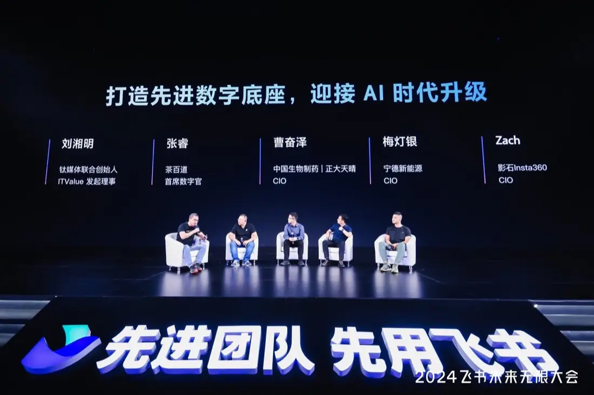
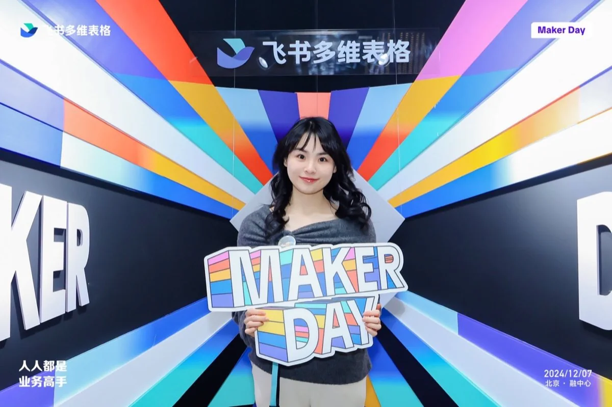
03 / BRAND · CONTENT JUDGEMENT
欧莱雅修丽可 SkinCeuticals｜品牌传播实习生
L’Oréal China
2024.06–2024.09
不是“找一个有流量的人”，而是判断谁能在正确场景里把产品讲得可信。
- 研究10+位候选合作人，比较受众、内容风格、商业记录、热度、品牌匹配与舆情风险。
- 基于目标消费者与产品场景提出合作建议并获团队采纳。
- 结合合作人的户外节目经历，提出“暴晒前后对比”的产品表达，进入最终脚本。
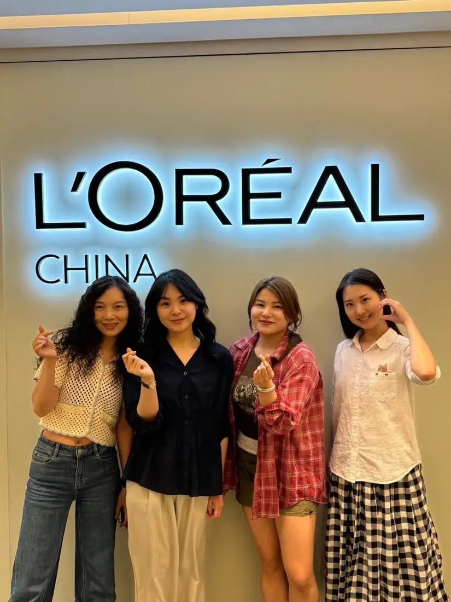
04 / MEDICAL · FRONTLINE QUESTIONS
欧莱雅修丽可 SkinCeuticals｜医学部实习生
医学市场与教育
2023.06–2024.03
165个问题表面在问“怎么用”，背后常常在确认风险、效果和可控性。
- 承接培训师与销售从诊所运营、顾问及医生处汇总的问题，去重分类并按产品线建立11类FAQ资料。
- 配合医学团队整理标准答复，支持培训师和诊所统一回应消费者咨询。
- 独立完成2场医生Webinar的Deck、主持稿、嘉宾连线、资料准备与现场主持；同时参与医学视频、临床研究启动会和专业会议。
165一线问题11FAQ类别2医生Webinar
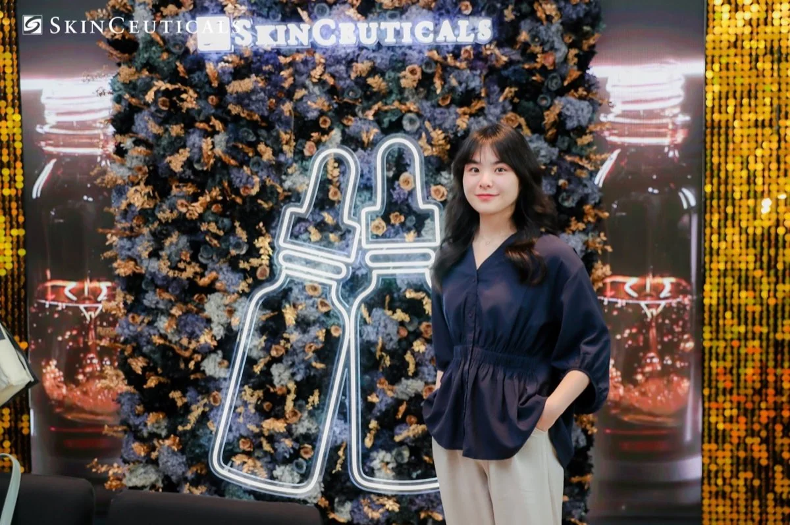
05 / GLOBAL MARKET · MEDICAL DEVICES
千禧光医疗科技｜全球市场实习生
Sol-Millennium Medical Group
2022.06–2022.09
以英文支持14个国家及地区的医疗产品包装与品牌视觉适配，依据不同市场规范调整商标、文字、版式和素材，并协调市场、销售与设计团队推进交付。这段经历让我第一次直观感受到：一致的品牌表达，必须经过具体市场规则的翻译。
返回经历目录RESEARCH & EDUCATION / 研究与教育
数字给我结构，
人文让我追问结构之外。
从AI产品采用，到媒体如何让疾病变得可理解：我关心的始终是信息怎样进入人的判断。
AIGC USER ADOPTION
用户会不会采用一个AI产品，
不只取决于“懂不懂AI”。
这篇论文问什么？
当一个人更了解AI时，为什么不一定立刻愿意使用AIGC产品？“有用”和“好上手”的感受，可能在中间发生什么作用？
我看见了什么？
630份有效样本显示，AI素养与使用意愿有关；感知有用性与感知易用性在其中发挥部分中介作用。
它对产品意味着什么？
解释AI是什么只是开始。产品还要让用户在真实任务里迅速看见价值，并降低第一次尝试的心理与操作门槛。
AI素养→价值与易用性感知→使用意愿
这项研究解释变量关系；问卷中的“使用意愿”并不等于真实留存或商业转化。
02 / UCL DISSERTATION · IN PROGRESS
同一个诊断进入英国与中国大陆媒体，为什么会形成不同的公共理解？
硕士论文分析75篇新闻与正式数字媒体材料，其中英国51篇、中国大陆24篇。核心关注不只是诊断名称是否出现，而是叙事形式、解释权、道德评价和患者形象如何共同决定一种行为何时会被承认为精神疾病的痛苦。
查看正式论文方向
From Diagnosis to Discourse: Bulimia Nervosa, Media Representation, and Public Intelligibility in the United Kingdom and Mainland China (1990–2015)
英国语料常通过名人访谈、个人叙事和家属回忆，将隐蔽的进食行为连接到心理感受、失控与脆弱；中国大陆的健康教育和医生主导报道则更多由专家界定模糊行为，并借家庭、法律与性别角色后果说明其社会意义。当前为研究型论文草稿，仍在修订中。
UCL COURSEWORK · 6篇六篇作业，六个我仍在追问的问题点击展开每篇论文的一段简介 ＋
01 / Child Public Health为什么青少年电子烟不能只靠“教育个人”解决？＋
我把青少年电子烟放回产品可得性、算法曝光、同伴环境与监管共同构成的环境中，而不是简单归因于个人自控力。论文讨论上游公共卫生措施，也分析如何在保护青少年与保留其对成年吸烟者的减害价值之间维持可信沟通。
02 / Gender & Global Health谁的身体必须先被看见，才会被承认为值得照护？＋
从Wellcome Collection的展品出发，我讨论身体、疾病叙事与社区照护如何变得可见。可见性常是获得承认与资源的前提，但暴露、讲述和照护劳动的代价并不平均。
03 / Global Mental Health当“可测量”变成“最重要”，哪些痛苦会从证据里消失？＋
我以抑郁症为例，追问量表、流行病学和随机对照试验为何更容易成为政策认可的证据，以及文化语境、生活关系与个人意义可能如何被遮蔽。
04 / Illness当临床语言拥有解释权，患者自己的知识还剩多少位置？＋
借助“认识论不正义”，我分析精神疾病书写如何揭示临床判断对可信度与解释权的分配，并讨论患者知识如何进入临床知识的构成，而不只是被礼貌倾听。
05 / Madness技术与现代生活如何改变人们理解疲惫、过载和疾病的方式？＋
我把十九世纪神经衰弱与电报带来的速度、响应压力和时间感放在一起阅读，讨论“神经、能量与过载”如何成为理解现代生活的语言。
06 / Skills & Methods同一种进食障碍，如何在英国与中国的媒体中被重新讲述？＋
这项方法训练后来发展为硕士论文：我比较两地媒体如何选择叙事主体、解释行为、分配权威，并让同一个诊断进入不同的公共理解框架。
BEYOND WORK / 工作之外
A life is not
a list of skills.
我喜欢移动、看现场，也愿意给生活留一点不那么“有用”的空间。
TRAVEL ARCHIVE / 10+ COUNTRIES & REGIONS
旅行不是勋章，
更像持续练习Plan B。
它训练我在陌生环境里规划、开口、观察，也让我在不可控发生时更快开始解决问题。
佛罗伦萨的航班取消后，我去了哪里？ ＋
FLORENCE → LONDON
FLORENCE → MILAN → LISBON → LONDON
已经盖完出境章，航班却突然取消。航空公司的方案是两天后经巴塞罗那回伦敦；我选择退票，赶上末班火车去米兰，再飞到一直想去的里斯本。后来写邮件跟进，除了退款，还收到250欧元补偿。
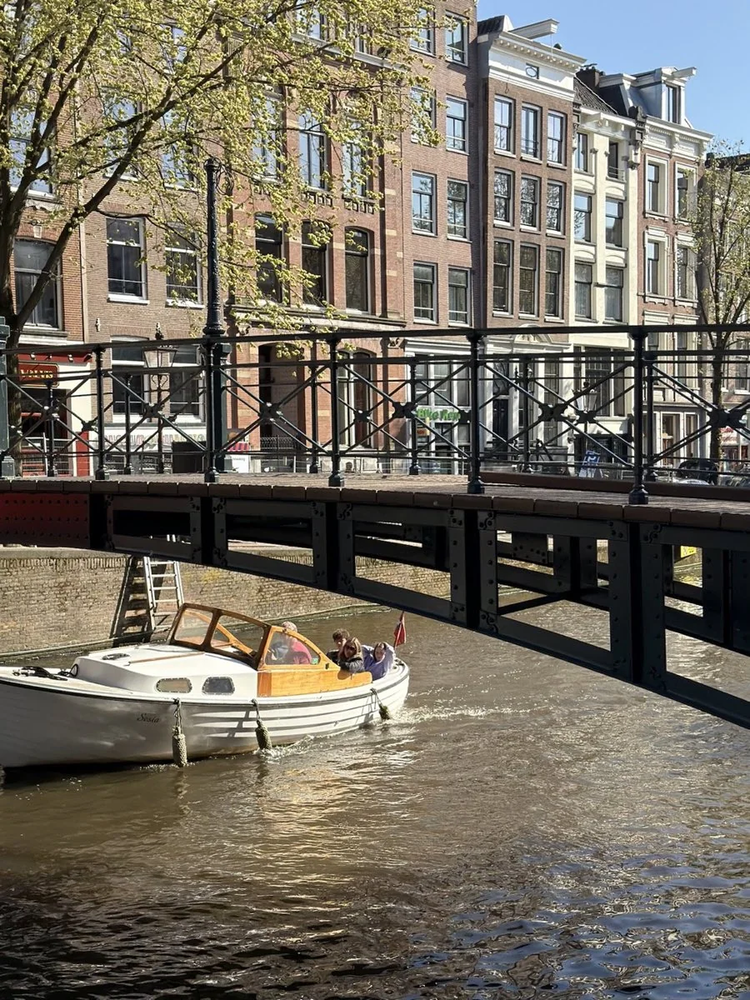
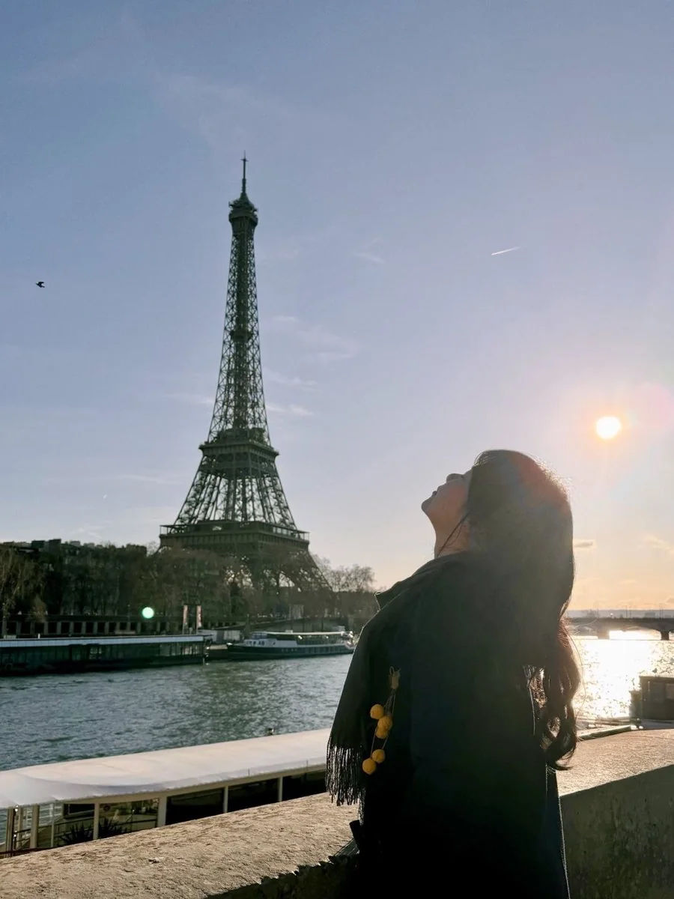
MOVING / NOT SITTING STILL
新鲜感会让我
更投入。
我喜欢出差，也喜欢到真实现场。人、问题和判断，通常都会在现场变得更具体。
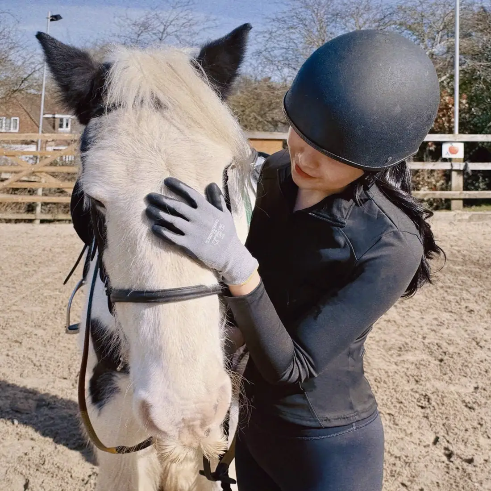
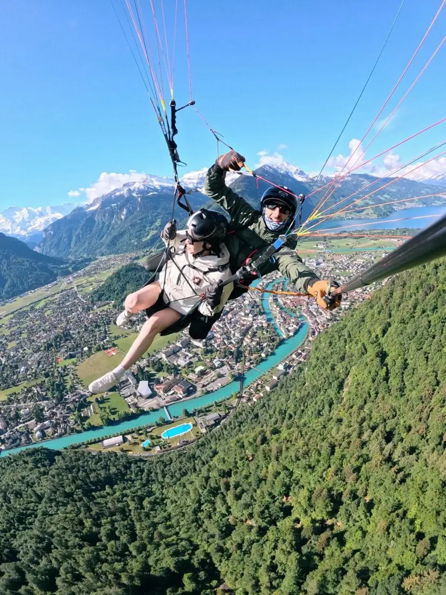
CONTACT / 联系
Let’s begin with
a real question.
zhangsichen.sia@foxmail.com
BASE上海
OPEN TO医疗科技、AI、ToB与市场相关机会；接受出差，也对不同城市及Base地的合适机会保持开放。
不必写邮件，也可以在留言簿里留下一句话 ↓LEAVE A NOTE / 留下一句话
读到这里，
轮到你说一句。
可以留下一个问题、一条建议，或你最想继续聊的部分。不必写真实姓名，也请不要留下联系方式或敏感信息。
READER NOTE / 读者留言
留言簿还在等第一句话。
Sia的访客